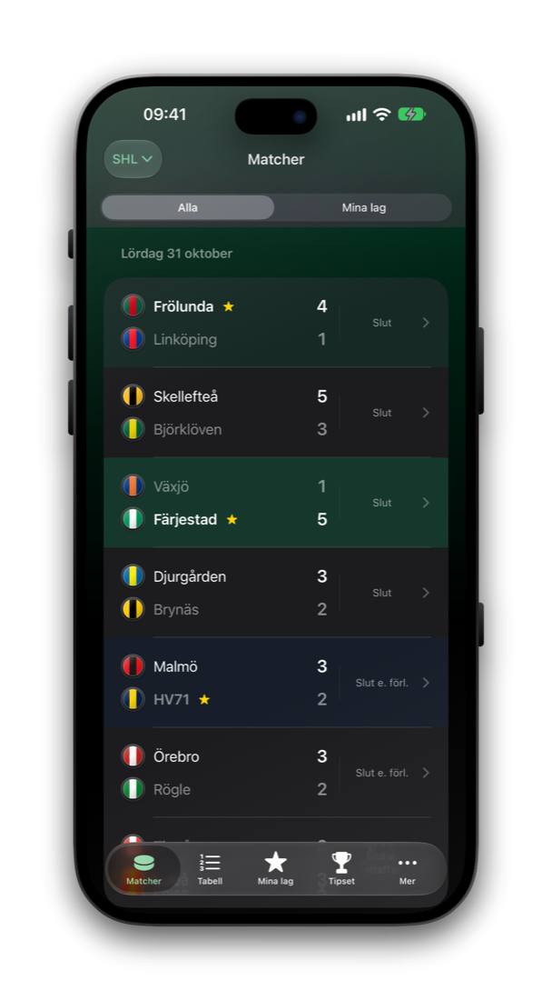
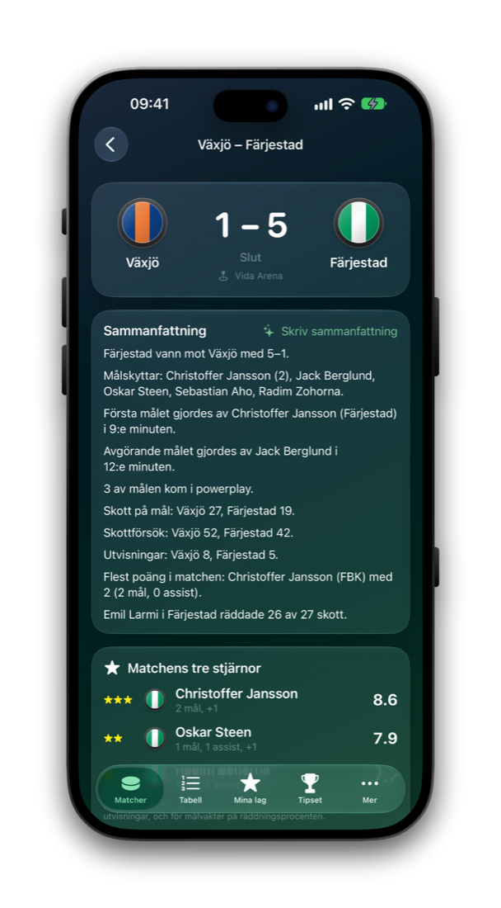
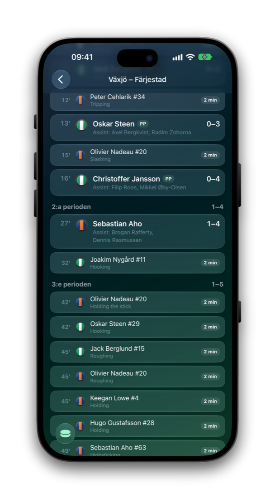
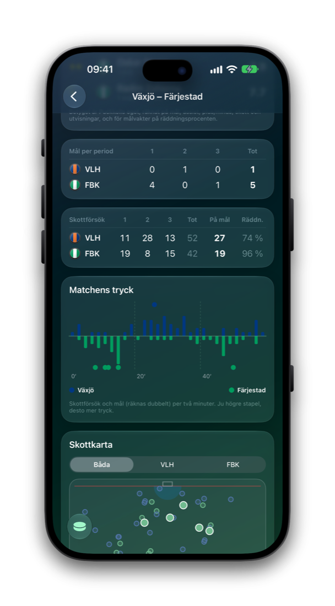
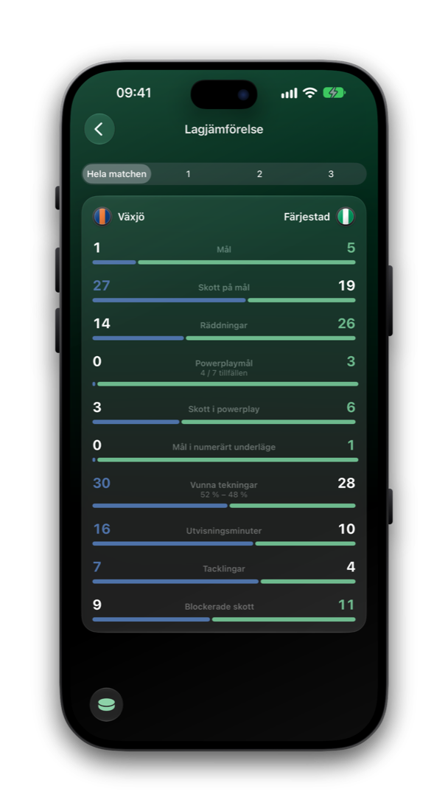
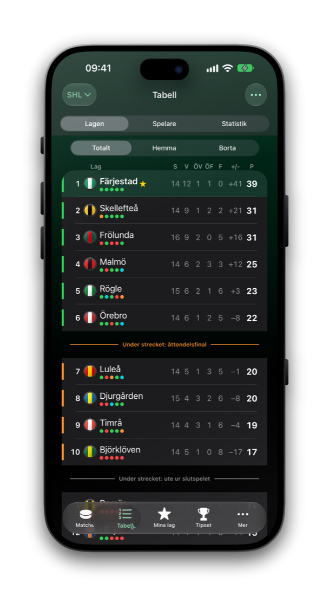
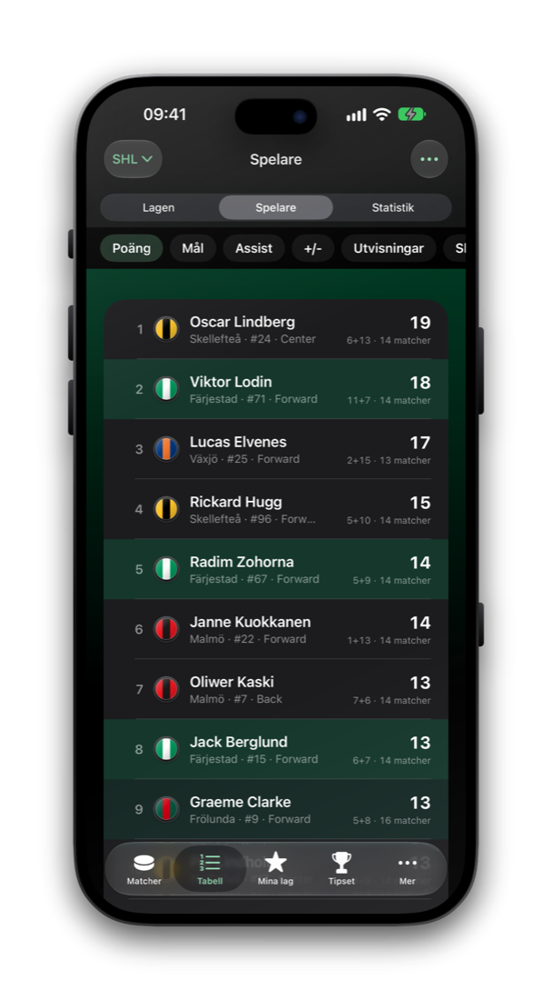
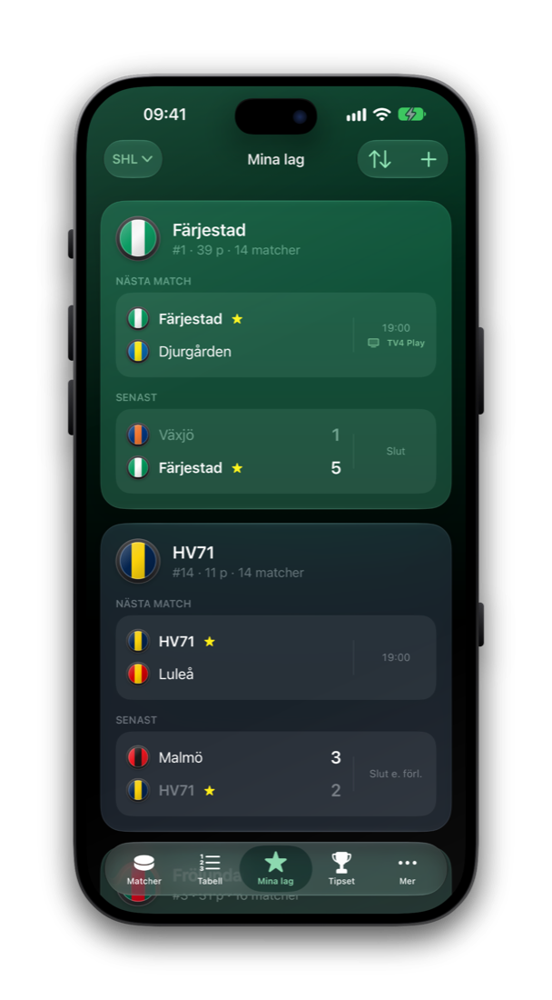

SHL · SDHL · HockeyAllsvenskan
Puckkoll.
Varje byte. Varje skott.
Ditt lag på iPhone, Apple Watch och låsskärmen. Live-resultat, skottkartor och en notis när det gäller.
Hela säsongen.
I fickan.



Matcher
Hela säsongen. Live.
Varje match, grupperad per dag, med live-resultat som tickar. Dina lag är markerade, och spoilerfritt läge döljer resultatet tills du trycker.
Matchsida
Varje match får en egen sida.
Resultattavla, en sammanfattning skriven på din iPhone av Apple Intelligence där den finns, och matchens tre stjärnor.
Händelser
Mål och utvisningar, period för period.
Varje mål med målskytt och assist, och varje utvisning med längd och typ.
Tryck
Se vem som tryckte på.
Skottförsök och räddningar per period, och ett tryckdiagram som visar hur matchen verkligen kändes.
Skottkarta
Varje skott, på kartan.
Skottförsök och mål utritade lag för lag, ur matchens play-by-play.
Jämför
Sida vid sida.
Mål, skott, räddningar, powerplay, tekningar, utvisningsminuter och tacklingar för de två lagen i en vy.



Tabell
Tabellen, på ditt sätt.
Totalt, hemma och borta, med formprickar och linjerna som avgör slutspelet. Välj själv vilka kolumner som visas.
Spelare
Spelarna bakom siffrorna.
Poäng, mål, assist, plus/minus, utvisningar, skott och målvakter i hela ligan, med dina lags spelare markerade.
Mina lag
Dina lag, samlade.
Nästa match och senaste resultat för varje lag du följer, i lagets egna färger.



Varje klubb är en puck i sina egna färger. Inga logotyper, inga konton och ingen spårning.
Klubbarna
Fjorton pucks. En säsong.
Detaljer
Gjord för matchkvällen.
Det du vill veta om ditt lag, och inget du inte bett om.
Målen, i samma stund.
Mål, laguppställning, pucksläpp, periodvila och slutsignal, lag för lag. En Live Activity håller resultatet på låsskärmen, och en widget och en Apple Watch-app visar nästa match.
Tippa med vänner.
Tippa varje match, gå med i en grupp med en kod och följ tabellen för säsongen och veckan under påhittade smeknamn. Avstängt tills du slår på det.
Följ en spelare.
Få en notis för mål, assist och utvisningar.
Spoilerfritt läge.
Dölj resultaten tills du trycker, och fördröj notiserna 30 sekunder om du ser matchen på tv.
Tre ligor.
SHL, SDHL och HockeyAllsvenskan från menyn överst. Notiser och Tipset finns än så länge för SHL.
Gjord för iPhone Duo.
Listan på ena skärmen och matchen på den andra, med egen layout runt vecket.
Privat på riktigt.
Inga konton, ingen reklam och ingen spårning. Servern vet bara det den behöver för att skicka en notis. Läs integritetspolicyn.
Skaffa Puckkoll.
Just nu i TestFlight-beta. För iPhone med iOS 26 eller senare, på svenska och engelska.